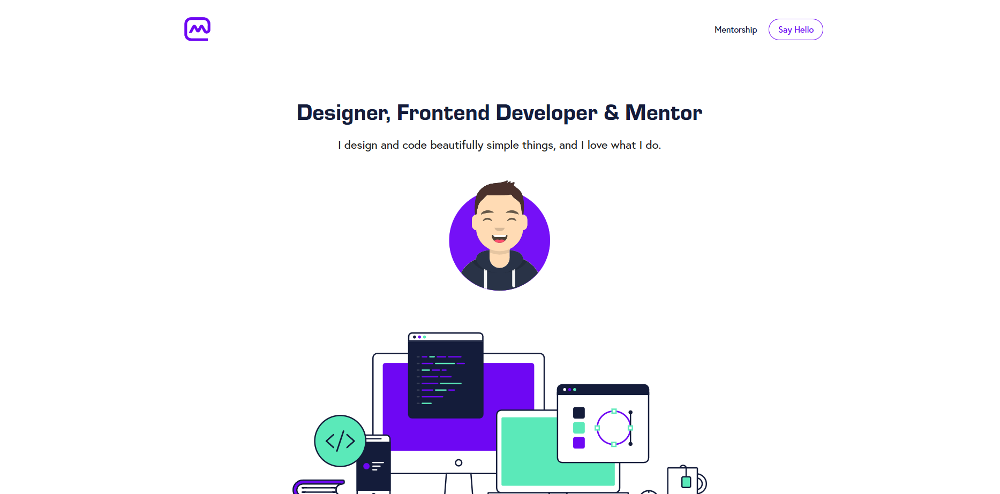
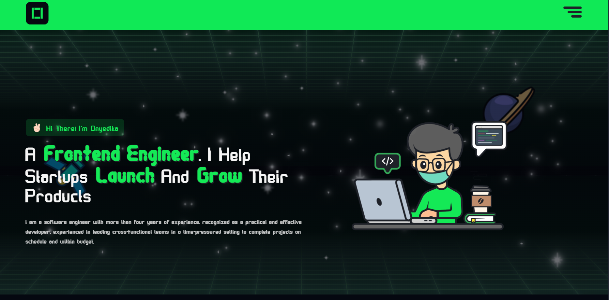
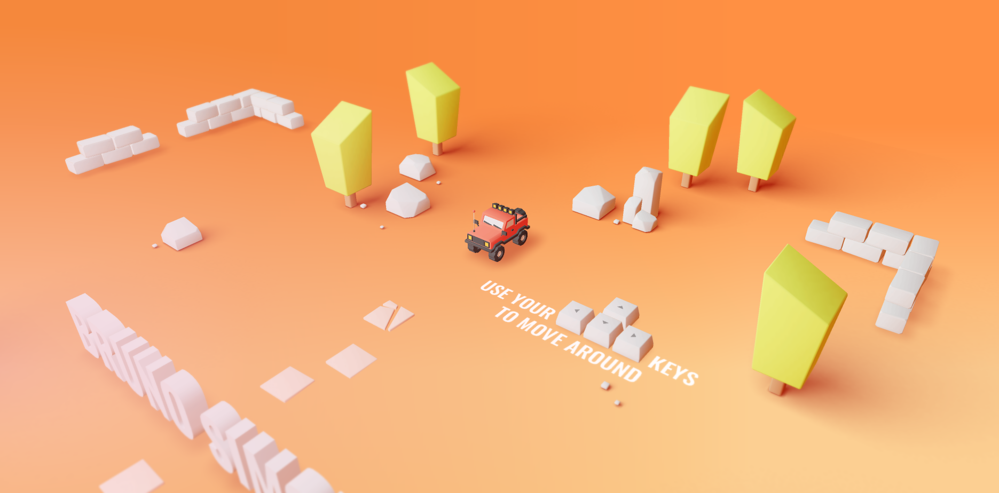

Inspiratiebronnen
Dit zijn enkele van mijn inspiraties in webdesign, ontwikkeling en creativiteit.

Inspiratie 1
Hier heb ik van Matt Farley wat inspiratie uit gehaald. Hij heeft zelf een mooie portfolio waar ik zijn thema uit heb gehaald, en hoe de pagina in elkaar zit.
Bekijk Portfolio

Onyedika
Hier heb ik van Onyedika ook wat inspiratie uit gehaald. Ik vind hier mooi hoe de animaties in elkaar zitten, wat ik ook een beetje heb gedaan.
Bekijk Portfolio

Bruno Simon
Hier is de portfolio van Bruno Simon. Ik heb weinig tot wel geen inspiratie hieruit gehaald, maar ik vind het echt een enorm leuke portfolio hoe hij het heeft gedaan met een spel.
Bekijk Portfolio